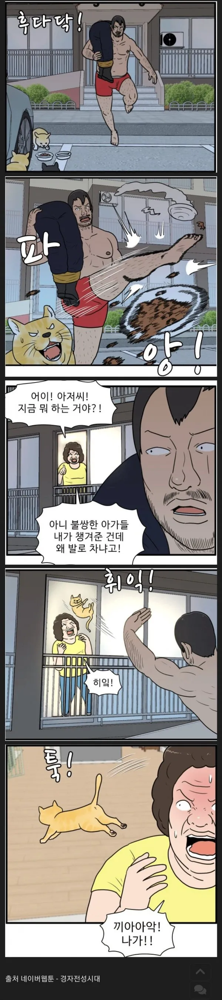

98 · 29 · 4 시간 전 · 원문

수집 당시 댓글 29개
유아학교 · 5 시간 전
독거노인 · 5 시간 전
저 시체는 뭐데
↳ 답글 · 불꽃남자김상원 · 5 시간 전
아쎄이임
↳ 답글 · 라면 · 5 시간 전
↳ 답글 · 안녕하세요개붕입니다잘부 · 49 분 전
그걸 봤어? 스터너!
Gasoline · 5 시간 전
만신..천재는 헷갈리게 하지 않는다
크툴루 · 5 시간 전
저건 거짓말인게 캣맘들은 자기집앞에는 저지랄 안함 ㅋㅋㅋ
↳ 답글 · 오늘도야근이다 · 5 시간 전
만화적 과장이지 ....ㅋㅋㅋ 실제로 캣망구들 아파트 단지 여기저기에 고양이 밥그릇 놓긴해 ...
↳ 답글 · 일진교육미이수자 · 5 시간 전
아파트는 하던데 어차피 경비가 똥 치워주니까
↳ 답글 · 워니랑 · 5 시간 전
아파트 단지내에서 해서 마찰심하다
↳ 답글 · 번째의자아 · 5 시간 전
시적허용..
↳ 답글 · 0살대마법사 · 5 시간 전
아파트에선 해...
↳ 답글 · 김윈그 · 4 시간 전
남의 아파트에 밥그릇 깔거나진화해서 비닐봉투에 소분해서 던지고 다닌다.심지어 지네동도 아닌 남의 동에 쌀알 뿌리는버드맘도 있음 ㅋㅋㅋ
오늘도야근이다 · 5 시간 전
전에 실제로 어떤 캣망구가 밥주는 털바퀴가 집에까지 쫒아오니 정색하며 쫒아내줘를 시전하는 다큐인가? 영상인가 있었던거 같은데 .... ㅋㅋ
곰은사람을찢어 · 5 시간 전
ㅋㅋㅋㅋㅋㅋㅋㅋㅋ
22222222 · 5 시간 전
속이 뻥
골목양조장 · 5 시간 전
뉴클리어 스터너!!!!
사촌간불알빨기 · 5 시간 전
스터너!
사슴맛치커리 · 4 시간 전
개인적으로는 저 웹툰이 불편하다실외기 위치가 저게 뭐야
↳ 답글 · 년째일병 · 4 시간 전
블루투스 산소호흡기가있고 힐링포션이 국밥인세상임 ㅋㅋㅋ
↳ 답글 · 경기도화성갈끄니까 · 46 분 전
작가가 일부러 저렇게 그림 ㅋㅋ
솔서리 · 4 시간 전
ㅋㅋㅋㅋㅋㅋㅋㅋㅋ ㅈㄴ웃겨
백운 · 4 시간 전
아파트에 지하주차장, 화단, 동이 10개가 넘는데 다 돌아다니면서 주는 정신나간 캣맘이 있다. 살려줘.
스네크 · 4 시간 전
스터너!!
자감돌이 · 3 시간 전
개그만화인척 하는 액션 격투기물임
다이젵 · 1 시간 전
ㅋㅋㅋㅋㅋㅋㅋㅋㅋㅋㅋㅋㅋㅋㅋㅋㅋㅋ
일만에가입함 · 39 분 전
스터너 아재 ㅋㅋㅋㅋㅋㅋ
몸이무거워지는시간 · 20 분 전
우리 아가(집에는 못들이는)
스미티워밴재거맨젠슨 · 19 분 전
이게 캣망구임
댓글
수집 당시 댓글 29개
유아학교 · 5 시간 전
독거노인 · 5 시간 전
저 시체는 뭐데
· 불꽃남자김상원 · 5 시간 전
아쎄이임
· 라면 · 5 시간 전
· 안녕하세요개붕입니다잘부 · 49 분 전
그걸 봤어?
스터너!
Gasoline · 5 시간 전
만신..천재는 헷갈리게 하지 않는다
크툴루 · 5 시간 전
저건 거짓말인게 캣맘들은 자기집앞에는 저지랄 안함 ㅋㅋㅋ
· 오늘도야근이다 · 5 시간 전
만화적 과장이지 ....ㅋㅋㅋ 실제로 캣망구들 아파트 단지 여기저기에 고양이 밥그릇 놓긴해 ...
· 일진교육미이수자 · 5 시간 전
아파트는 하던데 어차피 경비가 똥 치워주니까
· 워니랑 · 5 시간 전
아파트 단지내에서 해서 마찰심하다
· 번째의자아 · 5 시간 전
시적허용..
· 0살대마법사 · 5 시간 전
아파트에선 해...
· 김윈그 · 4 시간 전
남의 아파트에 밥그릇 깔거나
진화해서 비닐봉투에 소분해서 던지고 다닌다.
심지어 지네동도 아닌 남의 동에 쌀알 뿌리는
버드맘도 있음 ㅋㅋㅋ
오늘도야근이다 · 5 시간 전
전에 실제로 어떤 캣망구가 밥주는 털바퀴가 집에까지 쫒아오니 정색하며 쫒아내줘를
시전하는 다큐인가? 영상인가 있었던거 같은데 .... ㅋㅋ
곰은사람을찢어 · 5 시간 전
ㅋㅋㅋㅋㅋㅋㅋㅋㅋ
22222222 · 5 시간 전
속이 뻥
골목양조장 · 5 시간 전
뉴클리어 스터너!!!!
사촌간불알빨기 · 5 시간 전
스터너!
사슴맛치커리 · 4 시간 전
개인적으로는 저 웹툰이 불편하다
실외기 위치가 저게 뭐야
· 년째일병 · 4 시간 전
블루투스 산소호흡기가있고 힐링포션이 국밥인세상임 ㅋㅋㅋ
· 경기도화성갈끄니까 · 46 분 전
작가가 일부러 저렇게 그림 ㅋㅋ
솔서리 · 4 시간 전
ㅋㅋㅋㅋㅋㅋㅋㅋㅋ ㅈㄴ웃겨
백운 · 4 시간 전
아파트에 지하주차장, 화단, 동이 10개가 넘는데 다 돌아다니면서 주는 정신나간 캣맘이 있다. 살려줘.
스네크 · 4 시간 전
스터너!!
자감돌이 · 3 시간 전
개그만화인척 하는 액션 격투기물임
다이젵 · 1 시간 전
ㅋㅋㅋㅋㅋㅋㅋㅋㅋㅋㅋㅋㅋㅋㅋㅋㅋㅋ
일만에가입함 · 39 분 전
스터너 아재 ㅋㅋㅋㅋㅋㅋ
몸이무거워지는시간 · 20 분 전
우리 아가(집에는 못들이는)
스미티워밴재거맨젠슨 · 19 분 전
이게 캣망구임